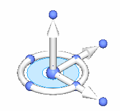
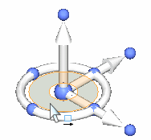
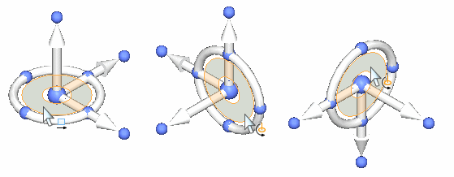
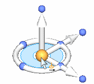
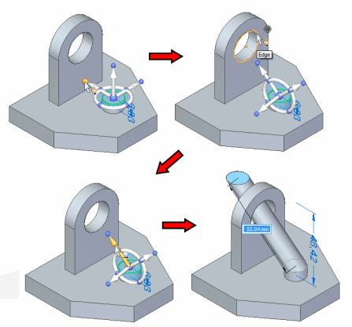
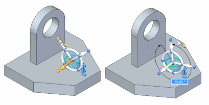
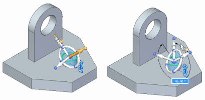
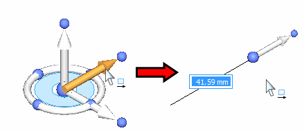
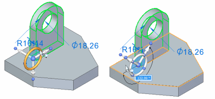

Steering wheel overview
The steering wheel is a graphical tool or handle that you can use to move or rotate 2D and 3D geometry you have selected.

You can use the steering wheel to move or rotate the following types of elements:
-
Reference planes (except the base reference planes)
-
Coordinate systems (except the base coordinate system)
-
Sketches
-
Sketch elements
-
Curves
-
Faces
-
Subdivision cage bodies
-
Features
-
Design bodies
Progressive exposure
The display of the steering wheel handle can vary based on the elements in the select set. This display variation is called progressive exposure. This means that in many modeling scenarios, only some of the steering wheel components are displayed when you select an element.
For example, when you click a single model face (A), only the origin knob and primary axis on the steering wheel are displayed (B).

You can then click the primary axis arrow on the steering wheel to move the selected face. The adjacent faces update automatically.

When you click to finish the move operation, all the components on the steering wheel display.

Clicking the origin knob displays all of the steering wheel components and attaches the cursor to the origin so you can move the steering wheel freely.

Steering wheel handle components and function basics
You use the various components on the steering wheel to specify how you want to modify the elements in the select set. The following illustrations show the name and primary function for each component of the steering wheel using the left mouse button.

Steering wheel tool plane
The tool plane is used to move or copy the selection keeping the direction of movement within the plane.

Shown below is an example of using the tool plane to move a selection.

The tool plane is used to reorient the steering wheel. Shift+click the tool plane will reorient the axes as shown.

Steering wheel origin knob
The origin knob is used to reposition the steering wheel. As the origin moves over faces, the axes will align to the valid geometry. To keep the original orientation of the steering wheel when repositioning, Shift+click the origin knob.

Steering wheel axis knob
The axis knob is used to orient the axis in the direction the selection will be moved or copied.

Shift+click the axis knob will rotate the orientation of the steering wheel in the plane of the torus.

Ctrl+click the axis knob will rotate the orientation of the steering wheel in the plane perpendicular to the torus.

Steering wheel axis
Clicking an axis will drag the selection in the direction of the axis.

Shift+click will move the steering wheel in the direction of the axis chosen.

Steering wheel torus
The torus is used to move, rotate, or copy the selection about the axis of the torus. It can also be used to create a revolved protrusion from a face or region.

Shift+click the torus will reposition the steering wheel by rotating about the torus axis.
